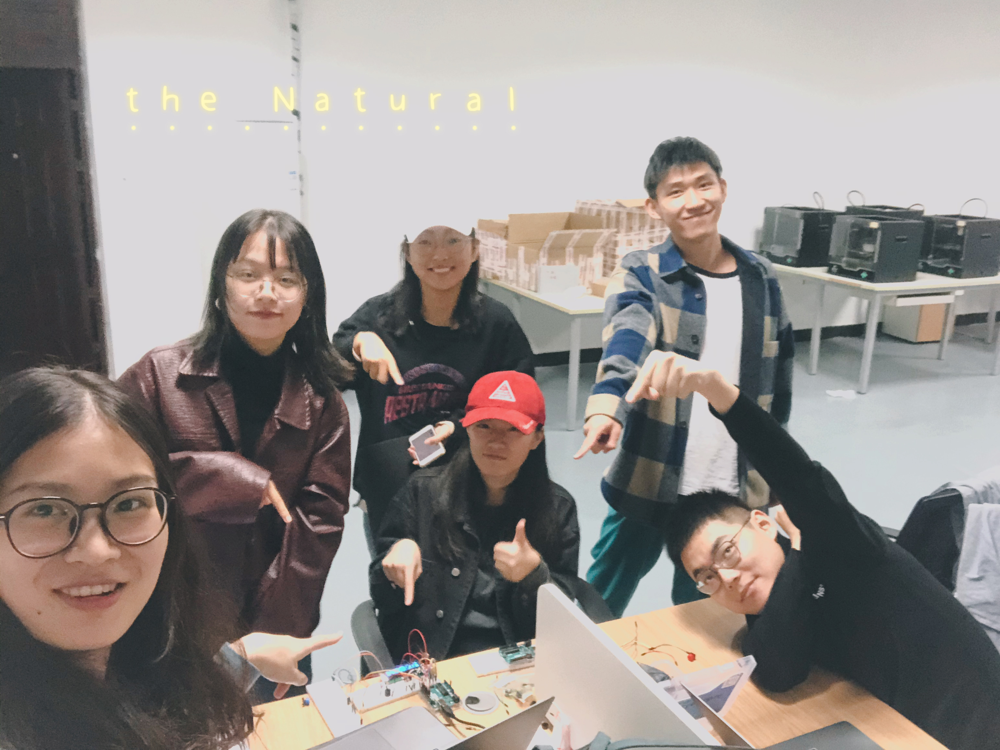
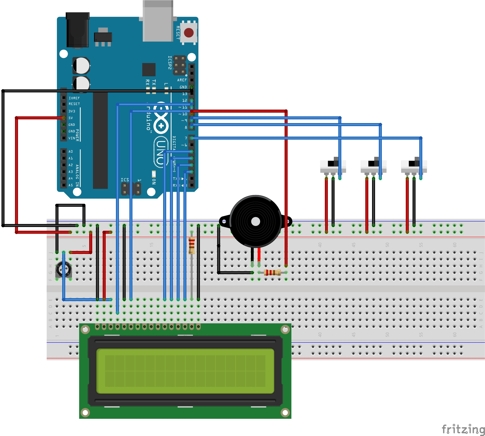
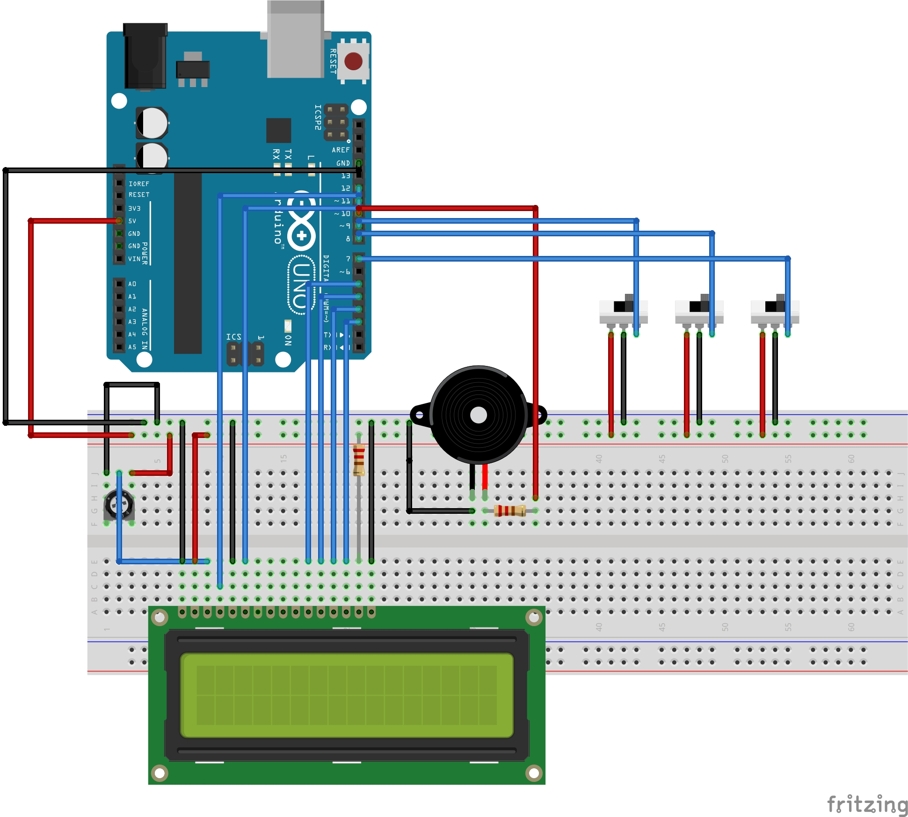
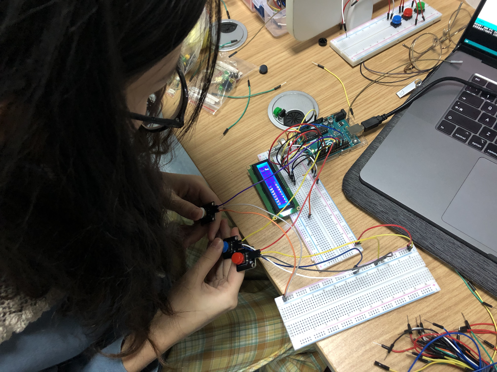

In the afternoon of October 19, after the conference, we met up in a professional classroom to start finishing our "Running Dinosaur".
After determining the direction last time, we quickly placed an order for materials and devices that may be used.
上次确定方向后，我们迅速下单了可能用到的材料与器件。
But we found that it can actually be achieved by using the LCD screen and switch buttons in the suite. So we met on the afternoon of October 19, after lunch, to do homework with professional teachers.
但是我们发现其实完全可以使用套间里的LCD液晶屏和开关按键实现，于是我们在10月19号的下午，在午饭过后，我们相约在专业教师做作业。
First of all, we assemble the switch buttons, LCD screen and other devices according to the circuit diagram drawn by Zhang Chao in advance.
先是连线，我们根据张超提前绘制好的电路图将开关按键、LCD液晶屏等器件装配。
 

Then test the code program to see if it works the way we want it to.
然后试验代码程序，是否能正常工作，达到我们想要的效果。
In the process of implementation, we felt that we could add some sound to make Running Dinosaur more colorful.
我们在实现的过程中，觉得可以添加一些音效让Running Dinosaur增色不少。
So the team members Huang Qiaoqiao ,Liu Mingyue, Zhang you, Du dashuang began to figure out how to use the buzzer on the Arduino to emit arcade-like sound effects. After a period of repeated polishing, he finally got a satisfactory result.
于是组员黄巧巧开始想办法如何在Arduino上配合蜂鸣器发出具有街机感的音效，经过一段时间的反复润色，终于得到了令人满意的结果。

#include
//LiquidCrystal lcd(8, 9, 4, 5, 6, 7);
LiquidCrystal lcd(12, 11, 5, 4, 3, 2);
#define btnUp 7
#define btnDown 8
#define btnStart 9
#define NOTE_D0 -1
#define NOTE_D1 262
#define NOTE_D2 293
#define NOTE_D3 329
#define NOTE_D4 349
#define NOTE_D5 392
#define NOTE_D6 440
#define NOTE_D7 494
#define NOTE_DL1 147
#define NOTE_DL2 165
#define NOTE_DL3 175
#define NOTE_DL4 196
#define NOTE_DL5 221
#define NOTE_DL6 248
#define NOTE_DL7 278
#define NOTE_DH1 523
#define NOTE_DH2 586
#define NOTE_DH3 658
#define NOTE_DH4 697
#define NOTE_DH5 783
#define NOTE_DH6 879
#define NOTE_DH7 987
//以上部分是定义是把每个音符和频率值对应起来，其实不用打这么多，但是都打上了，后面可以随意编写D调的各种歌，我这里用NOTE_D+数字表示音符，NOTE_DH+数字表示上面有点的那种音符，NOTE_DL+数字表示下面有点的那种音符。这样后面写起来比较好识别。
#define WHOLE 1
#define HALF 0.5
#define QUARTER 0.25
#define EIGHTH 0.25
#define SIXTEENTH 0.625
//这部分是用英文对应了拍子，这样后面也比较好看
int tune[] =
{
NOTE_DH1,NOTE_D6,NOTE_D5,NOTE_D6,NOTE_D0,
NOTE_DH1,NOTE_D6,NOTE_D5,NOTE_DH1,NOTE_D6,NOTE_D0,
};//这部分就是整首曲子的音符部分，用了一个序列定义为tune，整数
float duration[]=
{
1,1,0.5,0.5,1,
0.5,0.5,0.5,0.5,1,0.5,
};//这部分是整首曲子的接拍部分，也定义个序列duration，浮点（数组的个数和前面音符的个数是一样的，一一对应么）
int length;//这里定义一个变量，后面用来表示共有多少个音符
int tonePin=10;//蜂鸣器的pin
//这部分是用英文对应了拍子，这样后面也比较好看
int tune2[] =
{
NOTE_D3,NOTE_D5,NOTE_D6,NOTE_D6,
NOTE_D3,NOTE_D5,NOTE_D6,NOTE_D6,
NOTE_DH1,NOTE_D0,NOTE_D7,NOTE_D5,
NOTE_D6,
};//这部分就是整首曲子的音符部分，用了一个序列定义为tune，整数
float duration2[]=
{
0.5,1,0.5,1+1,
0.5,1,0.5,1+1,
1+1,0.5,0.5,1,
1+1+1+1
};//这部分是整首曲子的接拍部分，也定义个序列duration，浮点（数组的个数和前面音符的个数是一样的，一一对应么）
void startMusic()
{
for(int x=0;x= 0; j--){
for(int i = 0; i < 2; i++){
lcd.setCursor(j,i);
lcd.write(mat[i][j]);
}
}
if(!gamestarted){
String s = "Score: "+String(score);
String hs = "HighS: "+String(highscore);
lcd.setCursor(3,0);
lcd.print(s);
lcd.setCursor(3,1);
lcd.print(hs);
}
}
void cleanmat(){
for(int i = 0; i < 2; i++){
for(int j = 0; j < 16; j++){
mat[i][j] = 7;
}
}
}
void gameover(){
cleanmat();
gamestarted = false;
pausebetween = 1;
endMusic();
delay(1000);
}
void loop() {
if((digitalRead(btnUp)) && b2)jumpstarted = millis();
b1 = digitalRead(btnDown);
b2 = digitalRead(btnUp);
Serial.println(score);
if(!gamestarted){
if(digitalRead(btnStart)){
startMusic();
gamestarted = true;
score = 0;
}
}
if(gamestarted){
if(fps%3==0)walk+=1;
walk%=2;
if(fps%4==0){
pausebetween -= 1;
for(int i = 0; i<2;i++){
for(int j = 0; j<23; j++){
mat[i][j] = mat[i][j+1];
}
}
mat[0][23] = 7;
mat[1][23] = 7;
}
if(!pausebetween)generate_obstacles();
isJumping = !((millis()-jumpstartedhighscore)highscore=score;
fps+=1;
}
redraw();
lcd.setCursor(1,isJumping);
lcd.write(dinoAnim[b1*2+(walk)]);
}
void generate_obstacles(){
int obscount = random(1,4);
int types[4][2] = {{7,4},{6,5},{5,4},{6,7}} ;
int type = random(0,4);
for(int i = 0; i< obscount; i++){
mat[0][16+i] = types[type][0];
mat[1][16+i] = types[type][1];
}
int spacecount = random(2,5);
pausebetween = obscount + spacecount;
}
At the same time, we found an abnormality in the switch button itself, which would cause the program to fail to run normally.
与此同时，我们发现了套间里的开关按键本身有异常，会导致程序无法正常的运行。
Team member Zhang Chao went back to the dormitory and tried another switch button, while the remaining team members continued to debug the program.
队员张超回寝室拿另外的开关按键进行尝试，而剩余的组员则是继续调试着程序。

In the end, we got a satisfactory work through the integration again, and the team members all experienced Running Dinosaur in turn.
最终，我们通过再次的整合，得到了令人满意的作品，小组成员都依次体验了Running Dinosaur.
Here's our video showcase 👇
以下是我们的视频展示 👇